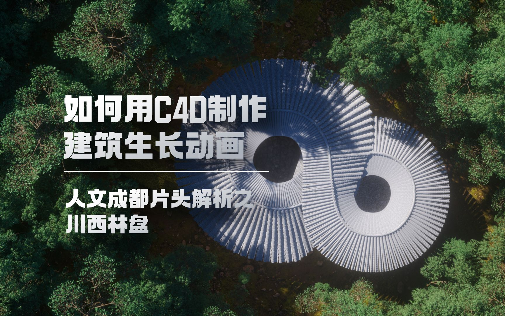
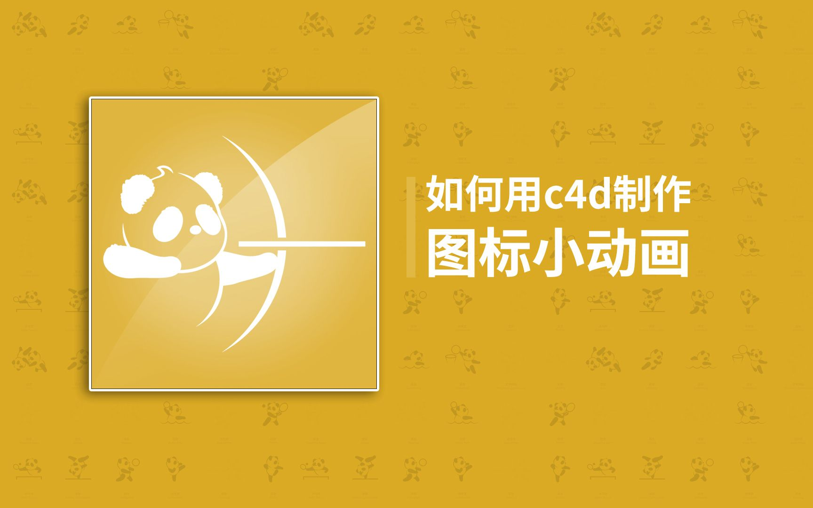

Selected Work (Motion & Stills)


Tools & Scripts
Hardware Log & Workshop
# WORKSTATION STATUS LOG
root@keycg:~$ check_thermal
[WARN] Thermal High. 水冷管发热中。
root@keycg:~$ check_storage
[ OK ] 硬盘冗余数据清理完毕。
root@keycg:~$ check_memory
[TODO] 进 BIOS 开启 XMP。
root@nas:~$ ping synology.local
[ OK ] Web Service Online.
root@keycg:~$
root@keycg:~$ check_thermal
[WARN] Thermal High. 水冷管发热中。
root@keycg:~$ check_storage
[ OK ] 硬盘冗余数据清理完毕。
root@keycg:~$ check_memory
[TODO] 进 BIOS 开启 XMP。
root@nas:~$ ping synology.local
[ OK ] Web Service Online.
root@keycg:~$
"Life is suffering. Yet he picked up his broken oar and set off again."
生活是苦难的，他又划着他的断桨出发了……

EMAIL / ZhaoWenke2014@qq.com